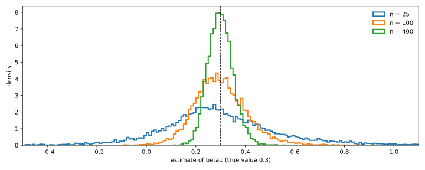
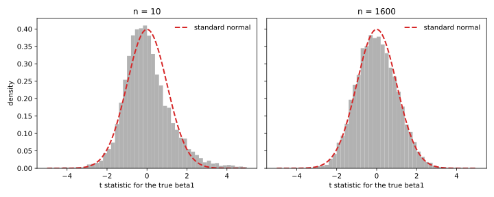
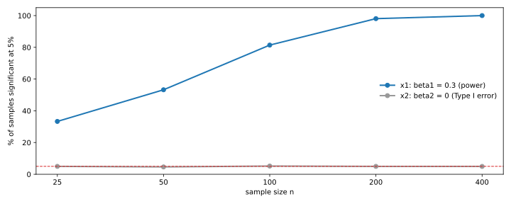

Articles · Econometrics
Large Samples: Consistency, Asymptotic Normality and the Power of a Test
The t and F tests use exact Student t and F distributions only if the error of the regression is normally distributed. In real data this assumption often fails: wages, firm sizes and stock returns are skewed and have heavy tails. This article explains what we can still say when the sample is large: where the OLS estimator goes as the sample size grows, which distribution the t statistic approaches, and how the sample size changes our chance of detecting a true effect.
All estimates are computed from scratch with NumPy; SciPy provides only the Student t and normal distributions.
A short video version of this article is on YouTube.
Why large samples?
Take the model
$$y = \beta_0 + \beta_1 x_1 + \dots + \beta_k x_k + u ,$$where \(u\) is the error: everything else that affects \(y\). Under the Gauss-Markov assumptions and normality of \(u\), the t statistic follows exactly a Student t distribution, for any sample size. Without normality, that result is no longer exact. Large-sample, or asymptotic, theory studies what happens to the OLS estimator as the sample size \(n\) grows, and answers three questions:
- Does \(\hat\beta_j\) get closer to the true \(\beta_j\)?
- Which distribution does the t statistic approach?
- How does \(n\) change our chance of detecting a true effect?
Consistency
An estimator is consistent if its distribution concentrates around the true value as \(n\) grows:
$$\operatorname{plim}_{n\to\infty} \hat\beta_j = \beta_j ,$$that is, for any margin \(\varepsilon > 0\), the probability that \(\hat\beta_j\) is farther than \(\varepsilon\) from \(\beta_j\) goes to zero: \(\Pr(|\hat\beta_j - \beta_j| > \varepsilon) \to 0\).
In simple regression, the OLS slope can be written as the true slope plus a ratio of two sample averages:
$$\hat\beta_1 = \beta_1 + \frac{n^{-1}\sum_i (x_i - \bar x)\,u_i}{n^{-1}\sum_i (x_i - \bar x)^2} .$$By the law of large numbers, the numerator converges to the covariance between \(x\) and \(u\), and the denominator to the variance of \(x\):
$$\hat\beta_1 \ \xrightarrow{\ n\to\infty\ }\ \beta_1 + \frac{\mathrm{Cov}(x, u)}{\mathrm{Var}(x)} .$$If \(x\) and \(u\) are uncorrelated, \(\mathrm{Cov}(x, u) = 0\) and \(\hat\beta_1\) is consistent. In multiple regression, every \(\hat\beta_j\) is consistent under the first four Gauss-Markov assumptions: linearity in parameters, random sampling, no perfect collinearity and zero conditional mean of the error. Normality is not needed.
Inconsistency
If a regressor is correlated with the error, the bias does not disappear as \(n\) grows:
$$\operatorname{plim} \hat\beta_1 - \beta_1 = \frac{\mathrm{Cov}(x_1, u)}{\mathrm{Var}(x_1)} \neq 0 .$$A common case is an omitted variable. If the true model is \(y = \beta_0 + \beta_1 x_1 + \beta_2 x_2 + u\) and we regress \(y\) on \(x_1\) alone, \(x_2\) ends up in the error, and the slope \(\tilde\beta_1\) converges to
$$\operatorname{plim} \tilde\beta_1 = \beta_1 + \beta_2\,\delta_1 , \qquad \delta_1 = \frac{\mathrm{Cov}(x_1, x_2)}{\mathrm{Var}(x_1)} .$$An inconsistent estimator still converges, but to the wrong value. A larger sample makes it more precise around \(\beta_1 + \beta_2\delta_1\), not closer to \(\beta_1\): more data does not fix a wrong model.
Asymptotic normality
Under the Gauss-Markov assumptions (the four above plus homoskedasticity), and even without normality of \(u\), the t statistic is approximately standard normal in large samples:
$$\frac{\hat\beta_j - \beta_j}{\mathrm{se}(\hat\beta_j)} \ \overset{a}{\sim}\ \mathcal N(0, 1) ,$$where \(\overset{a}{\sim}\) means "approximately distributed as, in large samples". The standard error shrinks at the rate \(\sqrt n\):
$$\mathrm{se}(\hat\beta_j) \approx \frac{c_j}{\sqrt n} ,$$where \(c_j > 0\) depends on the error variance \(\sigma^2\) and on the variation of \(x_j\), but not on \(n\). As a consequence, t tests, confidence intervals and F tests remain approximately valid in large samples, with the usual critical values. In large samples the Student t and the standard normal critical values are almost the same: at 5% two-sided, 1.98 with 97 degrees of freedom and 1.96 for the normal.
Type I and Type II errors
A test can make two kinds of error:
| \(H_0\) true | \(H_0\) false | |
|---|---|---|
| Reject \(H_0\) | Type I error (probability \(\alpha\)) | Correct |
| Do not reject \(H_0\) | Correct | Type II error |
The level \(\alpha\), usually 5%, fixes the probability of a Type I error. The power of a test is the probability of rejecting \(H_0\) when it is false:
$$\text{power} = \Pr(\text{reject } H_0 \mid H_0 \text{ false}) = 1 - \Pr(\text{Type II error}) .$$For \(H_0\colon \beta_j = 0\), the t statistic is close to \(\beta_j / \mathrm{se}(\hat\beta_j) \approx \sqrt n\,\beta_j / c_j\). Power therefore grows with the size of the effect \(|\beta_j|\) and with \(n\): with enough data, any effect different from zero is detected.
The simulation
To see these results at work, we build a population in which nothing is normal:
$$y = 1 + 0.3\,x_1 + 0\cdot x_2 + u .$$The regressors \(x_1\) and \(x_2\) are exponential variables shifted to mean 0 (variance 1, skewed to the right); the error \(u\) is a chi-square with one degree of freedom, rescaled to mean 0 and variance 1, so it is strongly skewed. The regressors and the error are independent, so the Gauss-Markov assumptions hold but normality does not. \(x_1\) has an effect, \(x_2\) has none.
For each sample size \(n\) we draw 10,000 samples and estimate the model by OLS. The function ols returns the estimates and their classical standard errors.
import numpy as np
from scipy import stats
BETA = np.array([1.0, 0.3, 0.0]) # intercept, x1 (has an effect), x2 (has none)
K = 2 # number of regressors
R = 10_000 # samples for each sample size
ALPHA = 0.05
def draw_sample(rng, n):
x1 = rng.exponential(1.0, n) - 1.0 # mean 0, variance 1, skewed
x2 = rng.exponential(1.0, n) - 1.0
u = (rng.chisquare(1, n) - 1.0) / np.sqrt(2.0) # mean 0, variance 1, strongly skewed
X = np.column_stack([np.ones(n), x1, x2])
return X, X @ BETA + u
def ols(X, y):
n, k1 = X.shape # k1 = k + 1 parameters
XtX_inv = np.linalg.inv(X.T @ X)
b = XtX_inv @ X.T @ y # (X'X)^-1 X'y
u_hat = y - X @ b # residuals
s2 = u_hat @ u_hat / (n - k1) # estimate of sigma^2
return b, np.sqrt(s2 * np.diag(XtX_inv)) # estimates, standard errors
def experiment(n, seed):
rng = np.random.default_rng(seed)
B, SE = np.empty((R, 3)), np.empty((R, 3))
for r in range(R):
B[r], SE[r] = ols(*draw_sample(rng, n))
return B, SE
NS = [10, 25, 50, 100, 200, 400, 1600]
res = {n: experiment(n, 100 + i) for i, n in enumerate(NS)}Consistency in the simulation
For four sample sizes we look at the 10,000 estimates of \(\beta_1\): their mean, their standard deviation, and the share of samples in which the estimate misses the true value by more than 0.1.
print(f"{'n':>6s}{'mean':>8s}{'std. dev.':>11s}{'share |b1 - 0.3| > 0.1':>24s}")
for n in [25, 100, 400, 1600]:
b1 = res[n][0][:, 1]
far = np.mean(np.abs(b1 - BETA[1]) > 0.1)
print(f"{n:6d}{b1.mean():8.3f}{b1.std():11.3f}{far:23.1%}") n mean std. dev. share |b1 - 0.3| > 0.1
25 0.299 0.247 60.8%
100 0.301 0.105 31.5%
400 0.300 0.051 4.9%
1600 0.300 0.025 0.0%
The mean is close to 0.3 at every \(n\): OLS is unbiased here. What changes with \(n\) is the spread: each time \(n\) is multiplied by 4, the standard deviation is roughly halved, as the \(1/\sqrt n\) rate predicts. At \(n = 25\), 60.8% of the estimates are more than 0.1 away from the true value; at \(n = 1{,}600\), only 2 out of 10,000 are.
import matplotlib.pyplot as plt
fig, ax = plt.subplots(figsize=(10, 4))
bins = np.arange(-0.6, 1.2, 0.01)
for n in [25, 100, 400]:
ax.hist(res[n][0][:, 1], bins=bins, density=True, histtype="step", lw=2, label=f"n = {n}")
ax.axvline(BETA[1], color="black", ls="--", lw=1)
ax.set(xlim=(-0.5, 1.1), xlabel="estimate of beta1 (true value 0.3)", ylabel="density")
ax.legend(frameon=False)
plt.tight_layout()
plt.show()
Asymptotic normality in the simulation
In each sample we compute the t statistic for the true value of \(\beta_1\),
$$t = \frac{\hat\beta_1 - \beta_1}{\mathrm{se}(\hat\beta_1)} ,$$and check its tails. The critical value \(c\) is the 5% two-sided critical value of the Student t with \(n - k - 1\) degrees of freedom, here \(n - 3\). If the t statistic followed the Student t, 2.5% of the samples would fall below \(-c\) and 2.5% above \(c\).
print(f"{'n':>6s}{'c':>7s}{'below -c':>10s}{'above c':>9s}{'skewness':>10s}")
for n in [10, 25, 100, 400, 1600]:
B, SE = res[n]
t = (B[:, 1] - BETA[1]) / SE[:, 1] # t statistic for the true value
c = stats.t.ppf(1 - ALPHA / 2, n - K - 1) # 5% two-sided critical value
skew = np.mean(((t - t.mean()) / t.std())**3)
print(f"{n:6d}{c:7.2f}{np.mean(t < -c):10.1%}{np.mean(t > c):9.1%}{skew:10.2f}") n c below -c above c skewness
10 2.36 1.2% 4.2% 1.30
25 2.07 0.8% 4.3% 0.86
100 1.98 1.2% 3.5% 0.45
400 1.97 1.6% 3.0% 0.28
1600 1.96 2.1% 2.9% 0.14
With \(n = 10\) the two tails are unbalanced: 1.2% of the samples fall below \(-c\) and 4.2% above \(c\), because the skewed error makes the t statistic skewed. As \(n\) grows, the skewness shrinks and the two tails move towards 2.5%: the normal approximation improves, even though the error is far from normal.
grid = np.linspace(-5, 5, 500)
fig, axes = plt.subplots(1, 2, figsize=(10, 4), sharey=True)
for ax, n in zip(axes, [10, 1600]):
B, SE = res[n]
t = (B[:, 1] - BETA[1]) / SE[:, 1]
ax.hist(t, bins=np.arange(-5, 5.01, 0.2), density=True, color="0.7")
ax.plot(grid, stats.norm.pdf(grid), color="C3", ls="--", lw=2, label="standard normal")
ax.set(title=f"n = {n}", xlabel="t statistic for the true beta1")
ax.legend(frameon=False)
axes[0].set_ylabel("density")
plt.tight_layout()
plt.show()
Sample size and power
Finally, we test \(H_0\colon \beta_j = 0\) for both regressors and record the share of samples in which each coefficient is significant at 5%. For \(x_1\), whose true effect is 0.3, this share is the power of the test; for \(x_2\), which has no effect, it is the probability of a Type I error.
NP = [25, 50, 100, 200, 400]
power, size = [], []
print(f"{'n':>6s}{'x1 significant':>16s}{'x2 significant':>16s}")
for n in NP:
B, SE = res[n]
c = stats.t.ppf(1 - ALPHA / 2, n - K - 1)
sig = np.mean(np.abs(B / SE) > c, axis=0) # share of samples with |t| > c
power.append(sig[1]); size.append(sig[2])
print(f"{n:6d}{sig[1]:16.1%}{sig[2]:16.1%}") n x1 significant x2 significant
25 33.3% 5.0%
50 53.2% 4.6%
100 81.4% 5.2%
200 98.1% 5.0%
400 100.0% 5.0%
At \(n = 25\) the test detects the effect of \(x_1\) in only 33.3% of the samples: in two samples out of three a researcher would conclude that \(x_1\) is not significant, although its effect is real. At \(n = 400\) the effect is detected in every sample. For \(x_2\), the share stays at about 5% for every \(n\): the level of the test does not depend on the sample size, its power does.
fig, ax = plt.subplots(figsize=(10, 4))
ax.plot(NP, 100 * np.array(power), "o-", lw=2, label="x1: beta1 = 0.3 (power)")
ax.plot(NP, 100 * np.array(size), "o-", lw=2, color="0.6", label="x2: beta2 = 0 (Type I error)")
ax.axhline(100 * ALPHA, color="C3", ls="--", lw=1)
ax.set_xscale("log"); ax.set_xticks(NP); ax.set_xticklabels(NP); ax.minorticks_off()
ax.set(ylim=(0, 105), xlabel="sample size n", ylabel="% of samples significant at 5%")
ax.legend(frameon=False, loc="center right")
plt.tight_layout()
plt.show()
Misreading large samples
- Consistent is not unbiased. Consistency is a property in the limit; in a small sample an estimator can still be biased or imprecise.
- A large sample does not fix a wrong model. With an omitted variable, more data gives a more precise estimate of the wrong quantity.
- Not significant in a small sample is not "no effect". The test may simply lack power.
- Significant in a huge sample is not "large effect". With enough data, an economically negligible effect is statistically significant.
Takeaways
- OLS is consistent when the regressors are uncorrelated with the error: \(\hat\beta_j\) concentrates around \(\beta_j\) as \(n\) grows.
- If a regressor is correlated with the error, OLS converges to the wrong value, however large the sample.
- In large samples the t statistic is approximately normal, even when the error is not: t tests and confidence intervals remain valid.
- The standard error shrinks like \(1/\sqrt n\), so the power of a test grows with \(n\), while the probability of a Type I error stays at \(\alpha\).
Reference: J. M. Wooldridge, Introductory Econometrics: A Modern Approach, 7th ed., Cengage, 2020. All data are simulated.